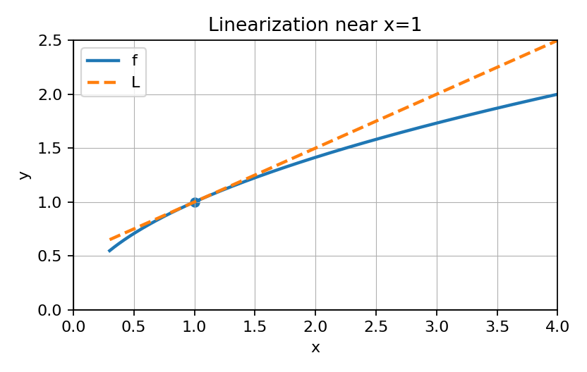

Show work and write reasoning clearly. Use correct calculus notation, units, and interpretation.
Use linearization of $f(x)=\sqrt{x}$ at $x=4$ to approximate $\sqrt{4.2}$. Justify the setup.
Show work and write reasoning clearly. Use correct calculus notation, units, and interpretation.
Explain why $\lim_{x o0}�rac{\sin x}{x}$ is not a direct-substitution quotient answer, then name an appropriate method.
Show work and write reasoning clearly. Use correct calculus notation, units, and interpretation.

Write a concise justification for using the tangent line near the point of tangency.
Show work and write reasoning clearly. Use correct calculus notation, units, and interpretation.
For $\lim_{x o1}�rac{x^2-1}{x-1}$, explain whether L'Hospital's Rule is allowed.
Show work and write reasoning clearly. Use correct calculus notation, units, and interpretation.
Use $f(2)=5$ and $f'(2)=3$ to write a linearization and explain its meaning.
Show work and write reasoning clearly. Use correct calculus notation, units, and interpretation.
Explain why checking the indeterminate form matters before using L'Hospital's Rule.